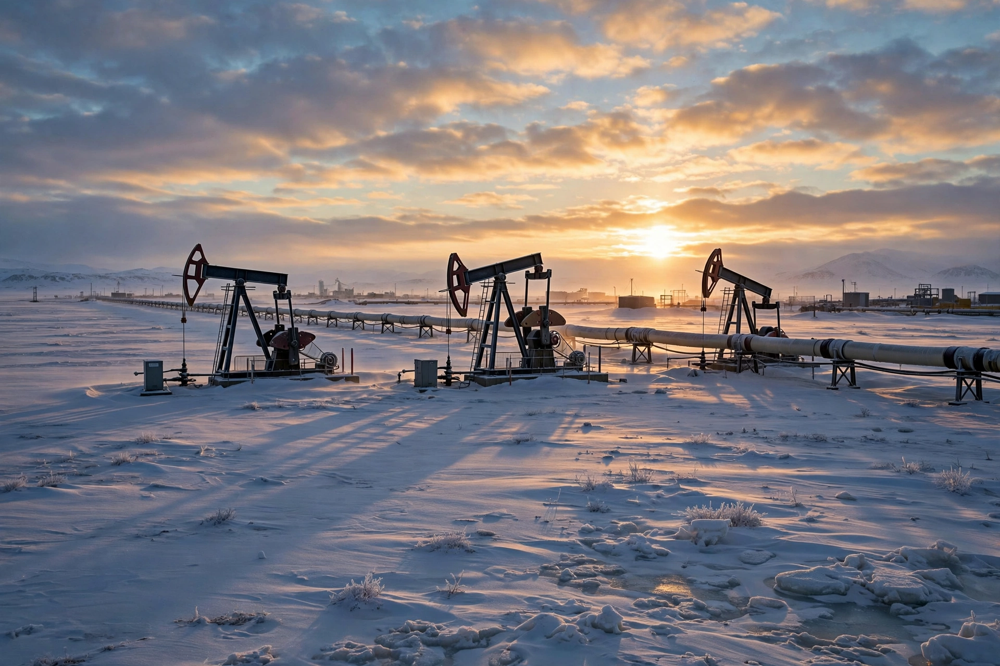

Alaska Permanent Fund
The Alaska Permanent Fund is a constitutionally established permanent fund established by the U.S. state of Alaska in 1976 to manage a portion of the state's oil revenues for the benefit of current and future generations of Alaskans. Managed by the state-owned Alaska Permanent Fund Corporation (APFC), the fund holds roughly $80 billion in assets and is best known for paying out the Permanent Fund Dividend (PFD), an annual cash payment made to nearly every Alaska resident.

| Alaska Permanent Fund | |
|---|---|
| Founded | 1976 (constitutional amendment); first deposit 1977 |
| Type | Sovereign wealth fund |
| Manager | Alaska Permanent Fund Corporation |
| Assets | c. $80 billion |
| Known for | Permanent Fund Dividend (since 1982) |
History
Following the 1968 discovery of oil at Prudhoe Bay and the construction of the Trans-Alaska Pipeline, Governor Jay Hammond championed a 1976 constitutional amendment requiring at least 25 per cent of state mineral royalties to be deposited into the fund. The first deposit of $734,000 was made in February 1977. In 1982 the fund began paying the Permanent Fund Dividend; the amount varies with fund earnings, and in 2008 an additional resource payment brought the combined total to a record $3,269 per person.
Structure and the dividend
The fund consists of a protected principal and an Earnings Reserve Account from which dividends and, since 2018, appropriations for state government are drawn under a percent-of-market-value (POMV) rule of roughly 5 per cent. Nearly every person who has lived in Alaska for a full calendar year and intends to remain is eligible for the dividend, making it one of the few large-scale, long-running examples of a citizen's dividend funded by resource wealth, and a frequent reference point in debates over universal basic income.
See also
Categories: Sovereign wealth funds · Economy of Alaska · 1976 establishments in Alaska